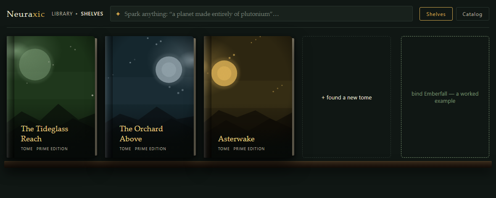

Choose a world
Three worlds sit on the shelf, in the app’s flat, low-motion layout.
Neuraxic / Personal project
A story’s prose, people, places and rules should be able to develop together. I wanted to try another version without losing what I had already decided.
A draft can show a detail before the author has accepted it as settled.
I shaped the workspace and acceptance boundary and reviewed results; AI tools wrote code.
Synthetic navigation study and five isolated SQLite tests. No demonstrated end-to-end authoring workflow.
Close inspection / existing public evidence
“The lantern falls dark as the water recedes.”
The invented prose offers that sentence as a possible rule. In the adjacent offer card, the author can accept it. Keeping the draft and proposed fact separate lets the author consider another version first.
I shaped that acceptance boundary. This is a navigation study and isolated storage evidence, not a demonstrated complete authoring workflow.
Actual public screenshot / CSS crop
Neuraxic · Writing story worlds
I wanted a place where a story’s prose, people, places and rules could develop together. I’m shaping Neuraxic around that idea: start with any fragment, explore its connections, and try another version without losing track of what I’ve already decided.
In Neuraxic, nothing counts as settled in a story until the author accepts it. Alongside the app’s screens, this page shows five tests that passed on two questions: what a version of the story can see, and what the author has accepted.
Original interface · fictional content
These are four of the app’s own screens: a shelf of worlds, a draft with suggested details, a map of relationships and a list of claims. The interface is real; only the data is made up. All four show the same invented setting, The Tideglass Reach.
Neuraxic keeps a story’s facts as claims, single statements such as “the lantern falls dark as the water recedes.” Each claim is either a proposal or canon. An open proposal is something to consider. Canon is what the author has explicitly accepted. A detail appearing on screen does not make that decision for them. On screen, an open seal marks a proposal and a gold seal marks canon.
Three worlds sit on the shelf, in the app’s flat, low-motion layout.
Brine Lantern stays selected as you switch between its draft, relationships and claims.
The proposed exception keeps its open seal beside three accepted claims.
The screens use the app’s current code, unchanged, at version f29176bf. Two planned features are still placeholders in that version: a cousin copy, meant to be a copy in another world that grows into its own thing, and sharing one element across several worlds. See the interface study record (JSON).
I chose an idea-first workspace. A “loose leaf” is an unplaced element; a “tome” groups a universe. The Library holds tomes, while the Catalog also includes loose elements.
Open an element and it becomes the focus. Prose, claims and the neighborhood map are views of that same subject, so writing and world-building can stay connected. Lenses are different ways to read its relationships.
The Claims screen states the approval rule in the app’s own words: “A proposal becomes canon only when you seal it. Every seal writes a receipt.” The Seal button runs the same step the tests further down call promotion.
The wider design distinguishes world truth, the events a story presents, and what characters or audiences believe. A character can be wrong while the author knows the answer.
When an event happens in the fiction differs from when the author records it. An alternate version starts from a chosen point in the main story.
A broken rule might become a mystery, an exception or a revision; the author decides which. A shared story structure could later support adaptations without silently changing the underlying world.
These are design ambitions. The tests below cover a small part of them: branching a version, flagging one kind of conflict and recording an approval.
Dark green surfaces, parchment-toned text and warm gold give the app the feel of a place to read and think. Its shelves and dossiers make a collection of story facts approachable.
The marks have specific meanings: the open and gold seals separate proposals from canon at a glance, and ember-colored findings draw attention to concerns.
Download the recording or read the transcript below.
A 34-second silent recording of real navigation in the app. It goes from the library into one world, then through its claims, draft, neighborhood and history, and back to the claims. Nothing is saved along the way. The labels are small, so fullscreen helps. Open the recording directly.
00:00 · Choose a world. Each tome is a place to keep related ideas, prose and claims.
00:04 · Open a tome, then focus on one of its elements.
00:07 · The claims view keeps canon and an unsealed proposal visibly distinct.
00:12 · Read the draft beside the offers the app found in it.
00:18 · See the named relationships around the same subject. The map is another way to read the world.
00:24 · Switch to the history lens, where claims carry time marks. Gold marks canon, and a dashed outline marks the proposal.
00:28 · Return to the claims. The proposal is still unsealed.
The five tests answer two questions: what can a version of the story see, and what has the author accepted? Neuraxic calls each version of a story’s facts a continuity. The diagrams explain the tests with a second setting, Bellweather Reach, separate from The Tideglass Reach in the screens above. They are not a recording of the app. Step 1 asks what had been recorded as of an earlier moment. Steps 2 and 3 follow a what-if version as it splits off, step 4 keeps a contradiction open, and step 5 records an approval.
Step 1 of 5
The main story holds one claim: the beacon is lit. Ask what this version knows and that claim comes back.
Coming back in the answer is what “visible” means. The claim can still be a proposal; visible and canon are different questions.
The beacon is lit.Recorded before the split · proposal
Ask what had been recorded as of an earlier moment, and anything recorded later stays out.
The author starts an alternate version. Neuraxic records the point in the main story where it splits off.
The what-if can see the main story’s claims up to that point. Later main-story edits are not automatically part of it.
The beacon is lit.
The beacon is lit.Visible from the main story
The arrow means the what-if can see what the main story held at the moment it split. Nothing is copied or approved along it.
Later, the main story adds a claim: the causeway is closed. Ask both versions what they know at that later point.
The main story includes the new claim. The what-if still sees the beacon claim, but not the causeway claim added after the split.
The beacon is lit.
The causeway is closed.New main-story claim
The beacon is lit.
The causeway claim came after the split.
Two answers at the same later point. The what-if keeps its starting point, and the main story’s edit is neither rejected nor erased.
A different test starts with a canon claim, then records a claim that gives a different value for the same detail of the same thing in the same version.
In the example, “the beacon is unlit” conflicts with the canon claim that it is lit. Neuraxic reports the conflict and keeps the new claim as a proposal. The idea stays available, and canon stays unchanged.
The beacon is lit.
The beacon is unlit.
Green marks canon; the plain box is the proposal.
When the author promotes a proposal, Neuraxic writes a canon receipt that records who did it. If the same promotion is sent again with the same identifying key, Neuraxic returns the original receipt.
One test saves the first promotion, then starts fresh before retrying. The receipt still matches.
A claim the author chooses to promote
A receipt records the decision without judging whether the story detail is good or coherent.
The branching tests cover a story’s own claims. Material a story pulls in from a shared library follows different rules, and those rules were not part of these tests.
A what-if keeps the point where it split off, so a useful later correction to the main story doesn’t reach it on its own. Bringing a correction across is not shown here.
Keeping a disputed proposal lets the author reconsider it. Deciding which version of the detail is right, and whether the story still holds together, is still up to the author.
How I work with AI tools
Five tests passed on 19 September 2026, with zero failures and zero skips.
Asking at an earlier point in the record leaves later claims out of the answer.
A what-if version keeps the claim it started with and does not see a claim added to the main story after the split, while the main story does.
A claim that gives a different value for the same detail as canon is reported and stays a proposal.
Promotion records who did it, and sending the same promotion twice returns one receipt, even after the first is saved and a new session is opened.
On 19 September 2026, the five tests ran the app’s real backend code against a throwaway database, with the network switched off. No AI model ran and nothing was generated.
The screens and the recording were prepared the same day. The interface in them is the app’s own code; the made-up data was fed to the screens as sample answers instead of coming from the app’s backend. The screens made twelve requests, all of them reads, and no errors appeared. Both settings, The Tideglass Reach and Bellweather Reach, were written for this page, and no private story material appears on it.
These five tests do not show how the app behaves on its real database under load, how sign-in works, whether it is ready to deploy, how the full interface behaves end to end, whether the writing inside it is any good, or whether every kind of contradiction in a world gets caught. The app’s source code and the full test record stay private.
Continue exploring
Original public case detail / retained with its evidence limits
Neuraxic · Writing story worlds
I wanted a place where a story’s prose, people, places and rules could develop together. I’m shaping Neuraxic around that idea: start with any fragment, explore its connections, and try another version without losing track of what I’ve already decided.
In Neuraxic, nothing counts as settled in a story until the author accepts it. Alongside the app’s screens, this page shows five tests that passed on two questions: what a version of the story can see, and what the author has accepted.
Original interface · fictional content
These are four of the app’s own screens: a shelf of worlds, a draft with suggested details, a map of relationships and a list of claims. The interface is real; only the data is made up. All four show the same invented setting, The Tideglass Reach.
Neuraxic keeps a story’s facts as claims, single statements such as “the lantern falls dark as the water recedes.” Each claim is either a proposal or canon. An open proposal is something to consider. Canon is what the author has explicitly accepted. A detail appearing on screen does not make that decision for them. On screen, an open seal marks a proposal and a gold seal marks canon.

Three worlds sit on the shelf, in the app’s flat, low-motion layout.
Brine Lantern stays selected as you switch between its draft, relationships and claims.
The proposed exception keeps its open seal beside three accepted claims.
The screens use the app’s current code, unchanged, at version f29176bf. Two planned features are still placeholders in that version: a cousin copy, meant to be a copy in another world that grows into its own thing, and sharing one element across several worlds. See the interface study record (JSON).
I chose an idea-first workspace. A “loose leaf” is an unplaced element; a “tome” groups a universe. The Library holds tomes, while the Catalog also includes loose elements.
Open an element and it becomes the focus. Prose, claims and the neighborhood map are views of that same subject, so writing and world-building can stay connected. Lenses are different ways to read its relationships.
The Claims screen states the approval rule in the app’s own words: “A proposal becomes canon only when you seal it. Every seal writes a receipt.” The Seal button runs the same step the tests further down call promotion.
The wider design distinguishes world truth, the events a story presents, and what characters or audiences believe. A character can be wrong while the author knows the answer.
When an event happens in the fiction differs from when the author records it. An alternate version starts from a chosen point in the main story.
A broken rule might become a mystery, an exception or a revision; the author decides which. A shared story structure could later support adaptations without silently changing the underlying world.
These are design ambitions. The tests below cover a small part of them: branching a version, flagging one kind of conflict and recording an approval.
Dark green surfaces, parchment-toned text and warm gold give the app the feel of a place to read and think. Its shelves and dossiers make a collection of story facts approachable.
The marks have specific meanings: the open and gold seals separate proposals from canon at a glance, and ember-colored findings draw attention to concerns.
The five tests answer two questions: what can a version of the story see, and what has the author accepted? Neuraxic calls each version of a story’s facts a continuity. The diagrams explain the tests with a second setting, Bellweather Reach, separate from The Tideglass Reach in the screens above. They are not a recording of the app. Step 1 asks what had been recorded as of an earlier moment. Steps 2 and 3 follow a what-if version as it splits off, step 4 keeps a contradiction open, and step 5 records an approval.
Step 1 of 5
The main story holds one claim: the beacon is lit. Ask what this version knows and that claim comes back.
Coming back in the answer is what “visible” means. The claim can still be a proposal; visible and canon are different questions.
The author starts an alternate version. Neuraxic records the point in the main story where it splits off.
The what-if can see the main story’s claims up to that point. Later main-story edits are not automatically part of it.
Later, the main story adds a claim: the causeway is closed. Ask both versions what they know at that later point.
The main story includes the new claim. The what-if still sees the beacon claim, but not the causeway claim added after the split.
The causeway claim came after the split.
A different test starts with a canon claim, then records a claim that gives a different value for the same detail of the same thing in the same version.
In the example, “the beacon is unlit” conflicts with the canon claim that it is lit. Neuraxic reports the conflict and keeps the new claim as a proposal. The idea stays available, and canon stays unchanged.
When the author promotes a proposal, Neuraxic writes a canon receipt that records who did it. If the same promotion is sent again with the same identifying key, Neuraxic returns the original receipt.
One test saves the first promotion, then starts fresh before retrying. The receipt still matches.
A claim the author chooses to promote
The branching tests cover a story’s own claims. Material a story pulls in from a shared library follows different rules, and those rules were not part of these tests.
A what-if keeps the point where it split off, so a useful later correction to the main story doesn’t reach it on its own. Bringing a correction across is not shown here.
Keeping a disputed proposal lets the author reconsider it. Deciding which version of the detail is right, and whether the story still holds together, is still up to the author.
Five tests passed on 19 September 2026, with zero failures and zero skips.
On 19 September 2026, the five tests ran the app’s real backend code against a throwaway database, with the network switched off. No AI model ran and nothing was generated.
The screens and the recording were prepared the same day. The interface in them is the app’s own code; the made-up data was fed to the screens as sample answers instead of coming from the app’s backend. The screens made twelve requests, all of them reads, and no errors appeared. Both settings, The Tideglass Reach and Bellweather Reach, were written for this page, and no private story material appears on it.
These five tests do not show how the app behaves on its real database under load, how sign-in works, whether it is ready to deploy, how the full interface behaves end to end, whether the writing inside it is any good, or whether every kind of contradiction in a world gets caught. The app’s source code and the full test record stay private.